set.seed(123)
n <- 500
x <- runif(n, 12, 30)
y <- 55.7 + 0.5969 * x - 2 * (x)^2 + rnorm(n, 0, 10)13 Residual analysis
\[ \require{physics} \require{braket} \]
\[ \newcommand{\dl}[1]{{\hspace{#1mu}\mathrm d}} \newcommand{\me}{{\mathrm e}} \newcommand{\argmin}{\operatorname{argmin}} \]
$$
$$
\[ \newcommand{\pdfbinom}{{\tt binom}} \newcommand{\pdfbeta}{{\tt beta}} \newcommand{\pdfpois}{{\tt poisson}} \newcommand{\pdfgamma}{{\tt gamma}} \newcommand{\pdfnormal}{{\tt norm}} \newcommand{\pdfexp}{{\tt expon}} \]
\[ \newcommand{\distbinom}{\operatorname{B}} \newcommand{\distbeta}{\operatorname{Beta}} \newcommand{\distgamma}{\operatorname{Gamma}} \newcommand{\distexp}{\operatorname{Exp}} \newcommand{\distpois}{\operatorname{Poisson}} \newcommand{\distnormal}{\operatorname{\mathcal N}} \newcommand{\distunif}{\operatorname{Unif}} \]
Residual analysis is one of the main tools for checking whether a regression model is appropriate.
In a regression model, the random errors are not directly observable, so we study the residuals instead.
Recall the usual assumptions on the error term \(\varepsilon\) in a regression model:
- \(\varepsilon\) is normally distributed.
- \(\varepsilon\) has mean \(0\).
- \(\varepsilon\) has constant variance \(\sigma^2\).
- All pairs of error terms are uncorrelated.
This chapter introduces graphical tools and statistical ideas for detecting important departures from these assumptions.
13.1 Regression Residuals
Suppose the regression model is \[ y_i = \beta_0 + \beta_1 x_{i1} + \cdots + \beta_p x_{ip} + \varepsilon_i. \]
Because the true error \(\varepsilon_i\) is unobservable, we estimate it by the residual \[ \hat \varepsilon_i = y_i - \hat y_i, \] where \(\hat y_i\) is the fitted value from the regression model.
Therefore a residual measures how far the observed response is from the fitted response.
- If \(e_i>0\), the model underpredicts the response at observation \(i\).
- If \(e_i<0\), the model overpredicts the response at observation \(i\).
- Large residuals indicate observations that are not well explained by the fitted model.
Proposition 13.1 (Two useful properties of residuals) For an ordinary least squares regression model with an intercept:
The residuals sum to zero: \[ \sum_{i=1}^n e_i = 0. \]
The standard deviation of the residuals is equal to the standard deviation of the fitted regression model, \(s\): \[ s=\sqrt{\frac{SSE}{n-(p+1)}} \]
13.2 Graphical Displays of Residuals
Residual plots are used to assess whether the model assumptions appear reasonable.
If the assumptions are satisfied, then residual plots should generally show:
- no systematic trend,
- no obvious curvature,
- no dramatic increase or decrease in spread,
- only a few residuals (around \(5\%\)) more than 2 estimated standard deviations (\(2s\)) of \(\varepsilon\) above or below \(0\).
A good residual plot looks like a random cloud centered around \(0\).
Residual plots are often the first diagnostic tool used to determine whether the deterministic part of the model may be misspecified.
Proposition 13.2 (Detecting Model Lack of Fit with Residuals)
- Plot the residuals, \(\hat\varepsilon\), on the vertical axis against each of the independent variables \(x_1\), …, \(x_k\) on the horizontal axis.
- Plot the residuals, \(\hat\varepsilon\), on the vertical axis against the predicted value \(\hat y\) on the horizontal axis.
- In each plot, look for
- systematic treands,
- curvature,
- dramatic changes in variability,
- or more than \(5\%\) of residuals outside the range \(\pm 2s\).
Any of these patterns suggests that the model may not fit the data adequately.
Example 13.1 (Detecting Curvature)
Click to expand.
Linear model
fit <- lm(y ~ x)
plot(x, resid(fit), xlab = "x", ylab = "Residual")
abline(h = 0, col = "red", lty = 2)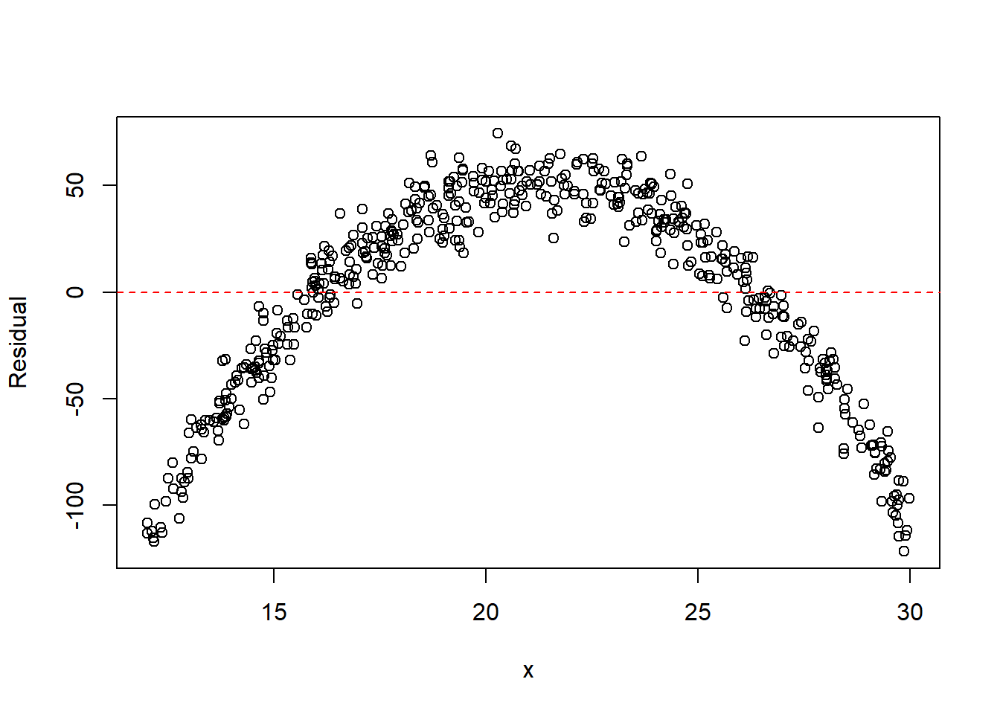
Quadratic model
fit2 <- lm(y ~ x + I(x^2))
plot(x, resid(fit2), xlab = "x", ylab = "Residual")
abline(h = 0, col = "red", lty = 2)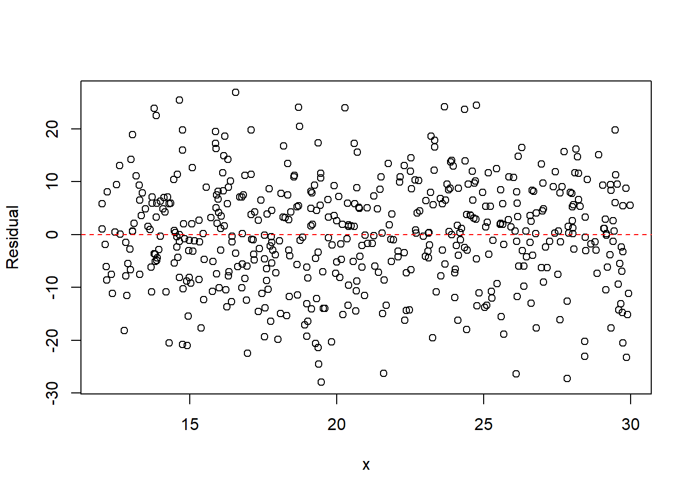
The residual plot from the linear model typically shows a parabolic pattern, indicating that the straight-line model is inadequate. After including the quadratic term, the residuals become more randomly scattered, suggesting the quadratic model better captures the mean structure.
Example 13.2 (Multiple Predictors)
Click to expand.
set.seed(123)
n <- 500
x1 <- runif(n, 10, 20)
x2 <- runif(n, 15, 30)
y <- 5 + 4 * x1 + 3 * x2^2 + rnorm(n, 0, 5)Linear model
fit <- lm(y ~ x1 + x2)
par(mfrow = c(1, 3))
plot(x1, resid(fit), xlab = "x1", ylab = "Residual")
abline(h = 0, col = "red", lty = 2)
plot(x2, resid(fit), xlab = "x2", ylab = "Residual")
abline(h = 0, col = "red", lty = 2)
plot(y, resid(fit), xlab = "fitted y", ylab = "Residual")
abline(h = 0, col = "red", lty = 2)
par(mfrow = c(1, 1))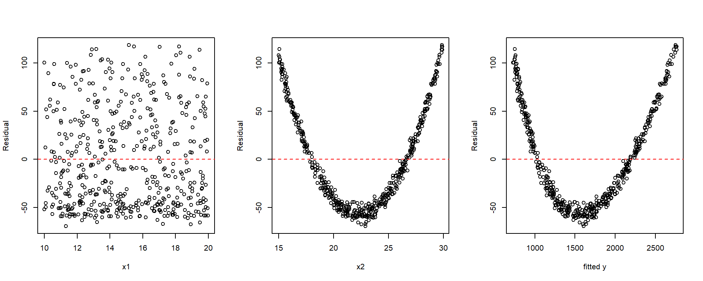
Model with quadratic term
fit2 <- lm(y ~ x1 + x2 + I(x2^2))
par(mfrow = c(1, 3))
plot(x1, resid(fit2), xlab = "x1", ylab = "Residual")
abline(h = 0, col = "red", lty = 2)
plot(x2, resid(fit2), xlab = "x2", ylab = "Residual")
abline(h = 0, col = "red", lty = 2)
plot(y, resid(fit2), xlab = "y", ylab = "Residual")
abline(h = 0, col = "red", lty = 2)
par(mfrow = c(1, 1))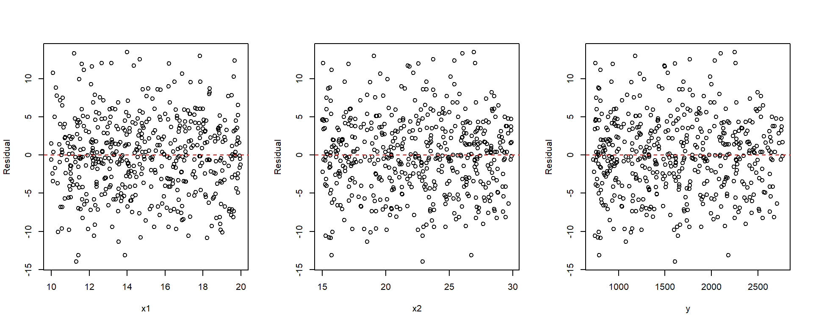
When drawing the plot that fitted values vs residuals, you may manually plot it as shown in the examples, or you may use plot(fit, which=1). This plot(fit) will be discussed later.
13.2.1 Partial Residual Plots
A partial residual plot (also called a component + residual plot) helps assess the relationship between the response and one predictor after accounting for the other predictors in the model.
For predictor \(x_j\), the partial residual is \[ e_i + \hat\beta_j x_{ij}. \]
Plotting these values against \(x_j\) can reveal structure that may be hidden in an ordinary residual plot. Such plots can help detect:
- curvature in the relationship between the response and a predictor,
- the need for transformation of a predictor,
- nonlinear relationships not visible in standard residual plots.
A partial residual plot may suggest:
- adding a quadratic term such as \(x_j^2\),
- transforming the variable, for example \(\log(x_j)\) or \(1/x_j\),
- reconsidering the functional form of the model.
The function car::crPlots() produces partial residual plots for each predictor. Each plot contains:
- Points: component + residual values
- Blue line: the fitted linear component \(\hat\beta_j x_j\)
- Red line: a smooth trend (typically obtained using LOESS smoothing) fitted to the partial residuals
If the red and blue lines are similar, the linear specification for that predictor is reasonable. If the red line deviates noticeably, especially if it shows curvature, the model may need a transformation or nonlinear term.
Example 13.3
set.seed(123)
n <- 500
x1 <- runif(n, .1, 1)
x2 <- runif(n, 0, 2)
y <- 5 + 1 / x1 + 3 * x2^2 + rnorm(n, 0, 1)library(car)
fit <- lm(y ~ x1 + x2)
summary(fit)
Call:
lm(formula = y ~ x1 + x2)
Residuals:
Min 1Q Median 3Q Max
-3.7401 -1.2251 -0.0527 0.9772 6.6867
Coefficients:
Estimate Std. Error t value Pr(>|t|)
(Intercept) 8.8449 0.2149 41.16 <2e-16 ***
x1 -5.7155 0.2931 -19.50 <2e-16 ***
x2 5.7887 0.1290 44.88 <2e-16 ***
---
Signif. codes: 0 '***' 0.001 '**' 0.01 '*' 0.05 '.' 0.1 ' ' 1
Residual standard error: 1.674 on 497 degrees of freedom
Multiple R-squared: 0.8242, Adjusted R-squared: 0.8235
F-statistic: 1165 on 2 and 497 DF, p-value: < 2.2e-16crPlots(fit)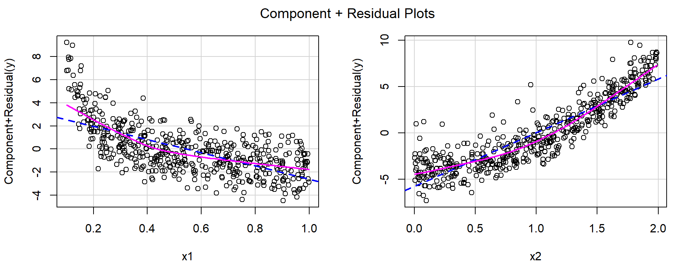
For both predictors, the red smooth curves show clear curvature, suggesting that the linear specification is inadequate.
Based on the shapes of the curves:
- for \(x_1\), a reciprocal transformation appears appropriate,
- for \(x_2\), a quadratic term appears appropriate.
fit1 <- lm(y ~ I(1 / x1) + I(x2^2))
summary(fit1)
Call:
lm(formula = y ~ I(1/x1) + I(x2^2))
Residuals:
Min 1Q Median 3Q Max
-2.85477 -0.68290 -0.01093 0.67139 2.71014
Coefficients:
Estimate Std. Error t value Pr(>|t|)
(Intercept) 4.95301 0.09725 50.93 <2e-16 ***
I(1/x1) 1.02183 0.02660 38.42 <2e-16 ***
I(x2^2) 2.99249 0.03853 77.67 <2e-16 ***
---
Signif. codes: 0 '***' 0.001 '**' 0.01 '*' 0.05 '.' 0.1 ' ' 1
Residual standard error: 1.012 on 497 degrees of freedom
Multiple R-squared: 0.9358, Adjusted R-squared: 0.9355
F-statistic: 3620 on 2 and 497 DF, p-value: < 2.2e-16crPlots(fit1)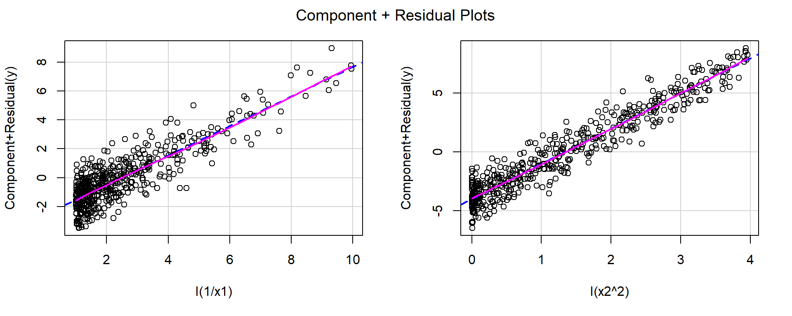
After applying these transformations, the red and blue lines closely match, indicating that the functional form is now more appropriate.
13.3 Detecting Unequal Variances
One important regression assumption is that the error variance is constant: \[ \operatorname{Var}(\varepsilon_i)=\sigma^2 \quad \text{for all } i. \]
Definition 13.1
- Homoscedasticity: constant variance.
- Heteroscedasticity: unequal variance.
Heteroscedasticity can often be detected from a residual plot. A plot of residuals versus fitted values, or versus a predictor, may show
- a funnel shape,
- a cone shape,
- spread increasing with the mean,
- spread decreasing with the mean.
These patterns suggest that the variability of the response changes with the level of the predictor or fitted value. In many such cases, the variance of \(y\) is a function of its mean \(\operatorname{E}(y)\).
Example 13.4 (Common reasons for heteroscedasticity) Heteroscedasticity often occurs when the variance of the response depends on its mean. Common situations include:
- count data, such as Poisson responses,
set.seed(1)
n <- 2000
x <- runif(n, 0, 25)
y <- rpois(n, 1 + 2 * x)
dat1 <- data.frame(x = x, y = y)
fit1 <- lm(y ~ x, data = dat1)
plot(fitted(fit1), resid(fit1), xlab = "Fitted value", ylab = "Residual")
abline(h = 0, col = "red", lty = 2)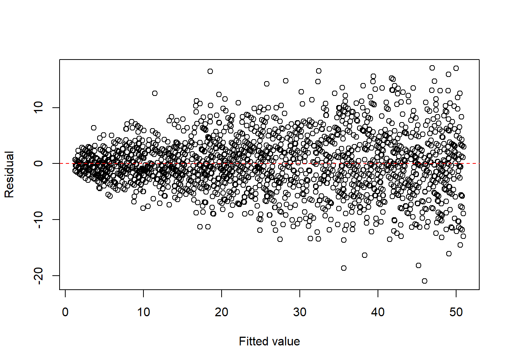
- proportions or percentages, such as binomial responses,
set.seed(1)
n <- 2000
m <- 100
x <- runif(n, 0, 1)
y <- rbinom(n, m, x) / m
dat2 <- data.frame(x = x, y = y)
fit2 <- lm(y ~ x, data = dat2)
plot(fitted(fit2), resid(fit2), xlab = "Fitted value", ylab = "Residual")
abline(h = 0, col = "red", lty = 2)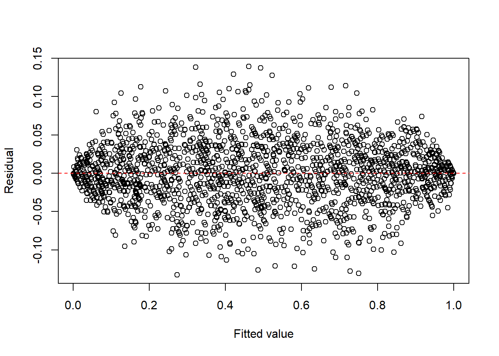
- multiplicative error structures.
set.seed(1)
n <- 2000
x <- runif(n, 1, 20)
eps <- exp(rnorm(n, 0, 0.4))
y <- x * eps
dat3 <- data.frame(x = x, y = y)
fit3 <- lm(y ~ x, data = dat3)
plot(fitted(fit3), resid(fit3), xlab = "Fitted value", ylab = "Residual")
abline(h = 0, col = "red", lty = 2)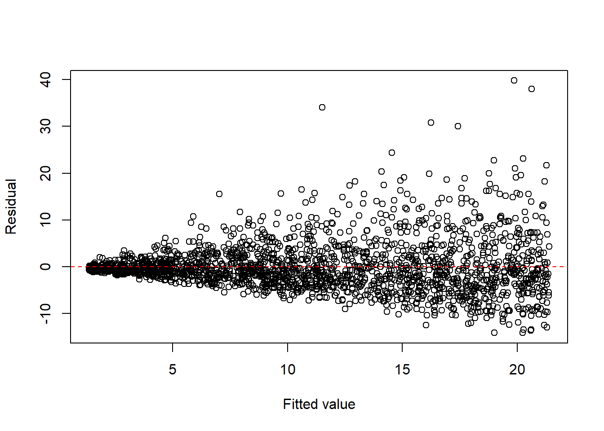
A common remedy is to apply a response transformation chosen to stabilize the variance.
Typical variance-stabilizing transformations include:
- \(\sqrt{y}\) for count-type data,
- \(\log(y)\) for multiplicative or right-skewed responses,
- other Box–Cox transformations: see Section 13.3.1.
| Type of Response | Variance | Stabilizing Transformation |
|---|---|---|
| Poisson | \(\operatorname{Var}(y)=\operatorname{E}(y)\) | \(\sqrt{y}\) |
| Binomial proportion | \(\operatorname{Var}(y)=\dfrac{\operatorname{E}(y)(1-\operatorname{E}(y))}{m}\) | \(\sin^{-1}(\sqrt{y})\) |
| Multiplicative | \(\operatorname{Var}(y)\propto [\operatorname{E}(y)]^2\) | \(\log(y)\) |
Example 13.5 (Count data) For count data, a square-root transformation is often used to stabilize the variance.
set.seed(1)
n <- 2000
x <- runif(n, 0, 25)
y <- rpois(n, 1 + 2 * x)
dat1 <- data.frame(x = x, y = y)
fit1 <- lm(I(sqrt(y)) ~ x, data = dat1)
plot(fitted(fit1), resid(fit1), xlab = "Fitted value", ylab = "Residual")
abline(h = 0, col = "red", lty = 2)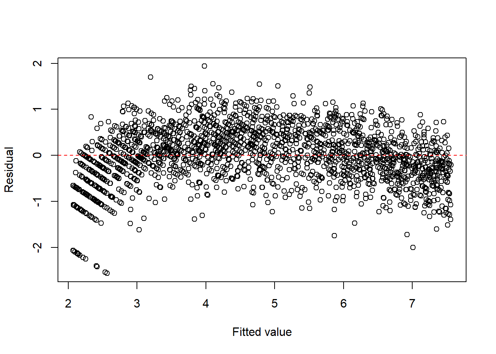
Click to expand.
Note that since there is an obvious curve, we could consider to add \(x^2\) term.
fit1c <- lm(I(sqrt(y)) ~ x + I(x^2), data = dat1)
plot(fitted(fit1c), resid(fit1c), xlab = "Fitted value", ylab = "Residual")
abline(h = 0, col = "red", lty = 2)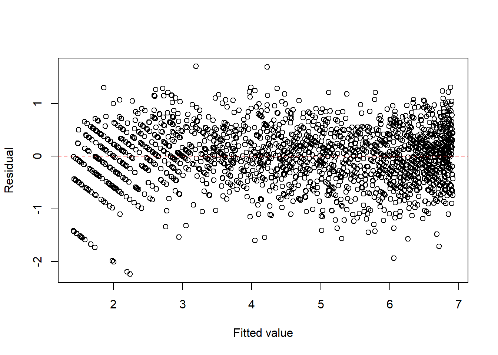
summary(fit1c)
Call:
lm(formula = I(sqrt(y)) ~ x + I(x^2), data = dat1)
Residuals:
Min 1Q Median 3Q Max
-2.24057 -0.33776 0.01998 0.36787 1.70561
Coefficients:
Estimate Std. Error t value Pr(>|t|)
(Intercept) 1.4139165 0.0351069 40.27 <2e-16 ***
x 0.3781664 0.0065469 57.76 <2e-16 ***
I(x^2) -0.0063308 0.0002533 -24.99 <2e-16 ***
---
Signif. codes: 0 '***' 0.001 '**' 0.01 '*' 0.05 '.' 0.1 ' ' 1
Residual standard error: 0.5328 on 1997 degrees of freedom
Multiple R-squared: 0.9039, Adjusted R-squared: 0.9038
F-statistic: 9392 on 2 and 1997 DF, p-value: < 2.2e-16Here are some calculations related to the model. Suppose the response follows a Poisson model
\[ Y \sim \text{Poisson}(\lambda), \qquad \lambda = 1 + 2x . \]
We consider the transformed response \(\sqrt{Y}\). Using a second–order delta method approximation,
\[ E(\sqrt{Y}) \approx \sqrt{\lambda} - \frac{1}{8\sqrt{\lambda}}, \qquad \lambda = 1 + 2x . \]
Let \[ m(x) = \sqrt{1+2x} - \frac{1}{8\sqrt{1+2x}}. \]
We approximate \(m(x)\) near \(x_0 = 12.5\) using the 2nd order Taylor polynomial. We choose \(12.5\) since \(12.5\) is the mean of \(\distunif(0,25)\). At this point,
\[ \lambda_0 = 1 + 2x_0 = 26 . \]
Evaluating derivatives \[ \begin{split} m'(x)&=\frac1{\sqrt{1+2x}}+\frac{1}{8(1+2x)^{3/2}},\\ m''(x)&=-\frac{1}{(1+2x)^{3/2}}-\frac3{8(1+2x)^{5/2}}. \end{split} \]
Then
\[ m(12.5) \approx 5.0745, \qquad m'(12.5) \approx 0.1971, \qquad m''(12.5) \approx -0.00765 . \]
The second-order Taylor expansion around \(12.5\) is
\[ m(x) \approx 5.0745 + 0.1971(x-12.5) - 0.00382(x-12.5)^2 \approx 2.014 + 0.293x - 0.00382x^2 . \]
Compare it to our estimation.
fit1c
Call:
lm(formula = I(sqrt(y)) ~ x + I(x^2), data = dat1)
Coefficients:
(Intercept) x I(x^2)
1.413916 0.378166 -0.006331 Example 13.6 (Binomial-type) For binomial-type responses, the arcsine square-root transformation is sometimes used to reduce heteroscedasticity.
set.seed(1)
n <- 2000
m <- 100
x <- runif(n, 0, 1)
y <- rbinom(n, m, x) / m
dat2 <- data.frame(x = x, y = y)
fit2 <- lm(I(asin(sqrt(y))) ~ x, data = dat2)
plot(fitted(fit2), resid(fit2), xlab = "Fitted value", ylab = "Residual")
abline(h = 0, col = "red", lty = 2)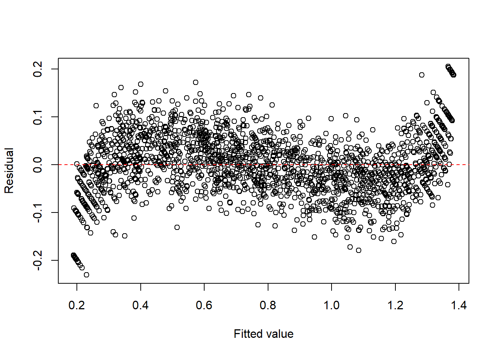
Click to expand.
Similar to the previous example, we could add 2nd order and 3rd order term since there is an obvious curvy pattern.
fit2c <- lm(I(asin(sqrt(y))) ~ x + I(x^2) + I(x^3), data = dat2)
plot(fitted(fit2c), resid(fit2c), xlab = "Fitted value", ylab = "Residual")
abline(h = 0, col = "red", lty = 2)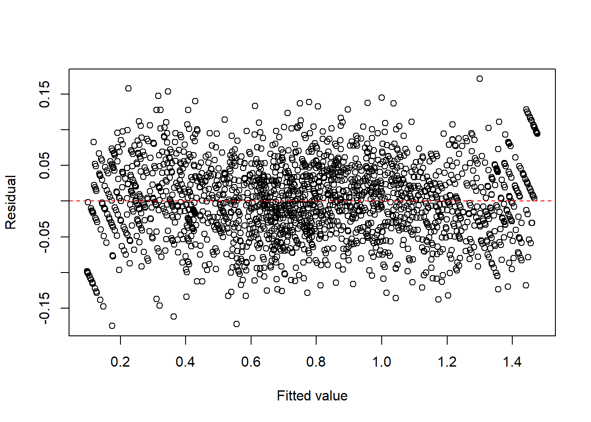
summary(fit2c)
Call:
lm(formula = I(asin(sqrt(y))) ~ x + I(x^2) + I(x^3), data = dat2)
Residuals:
Min 1Q Median 3Q Max
-0.174901 -0.035111 -0.000153 0.035821 0.171387
Coefficients:
Estimate Std. Error t value Pr(>|t|)
(Intercept) 0.096861 0.004664 20.77 <2e-16 ***
x 2.308738 0.040767 56.63 <2e-16 ***
I(x^2) -2.803421 0.095339 -29.41 <2e-16 ***
I(x^3) 1.873914 0.062853 29.81 <2e-16 ***
---
Signif. codes: 0 '***' 0.001 '**' 0.01 '*' 0.05 '.' 0.1 ' ' 1
Residual standard error: 0.05327 on 1996 degrees of freedom
Multiple R-squared: 0.9775, Adjusted R-squared: 0.9775
F-statistic: 2.896e+04 on 3 and 1996 DF, p-value: < 2.2e-16Example 13.7 (Multiplicative error structures) When the variability increases proportionally to the mean, a log transformation is often useful. A more natural multiplicative-error model is \(y=x\cdot\varepsilon\), where \(\varepsilon>0\) is a random error term. Taking logs gives \[ \log y=\log x+\log \varepsilon, \] so the log transformation converts multiplicative errors into additive ones.
set.seed(1)
n <- 2000
x <- runif(n, 1, 20)
eps <- exp(rnorm(n, 0, 0.4))
y <- x * eps
dat3 <- data.frame(x = x, y = y)
fit3 <- lm(log(y) ~ log(x), data = dat3)
plot(fitted(fit3), resid(fit3), xlab = "Fitted value", ylab = "Residual")
abline(h = 0, col = "red", lty = 2)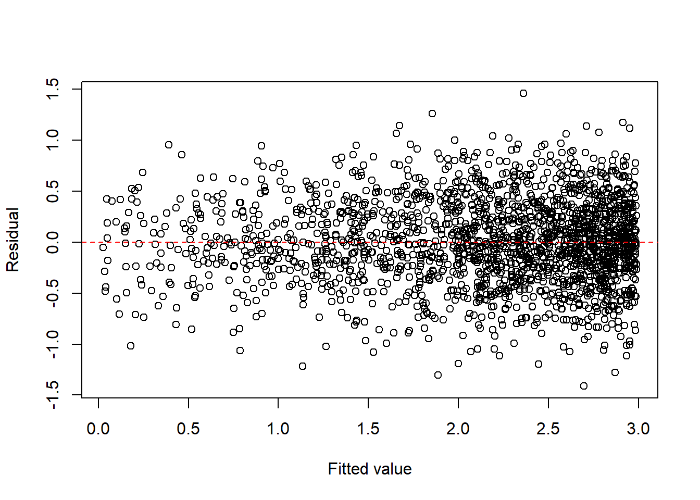
Tip
For count and proportion responses, generalized linear models (GLM) are often more natural than transforming the response and fitting ordinary least squares.
13.3.1 Box-Cox transformation
When a simple transformation such as \(\sqrt{y}\) or \(\log(y)\) is not clearly appropriate, the Box-Cox transformation provides a systematic family of power transformations for a positive response variable \(y>0\).
For a parameter \(\lambda\), the Box–Cox transformation is defined as \[ y^{(\lambda)}= \begin{cases} \dfrac{y^\lambda-1}{\lambda}, & \lambda \neq 0,\\[1em] \log(y), & \lambda = 0. \end{cases} \]
This family includes several common transformations as special cases:
- \(\lambda=1\): no transformation (approximately),
- \(\lambda=\frac{1}{2}\): square-root transformation,
- \(\lambda=0\): log transformation,
- \(\lambda=-1\): reciprocal transformation.
In practice, \(\lambda\) is usually estimated from the data by maximizing the likelihood over a range of candidate values.
A fitted model after transformation has the form \[ y^{(\lambda)}=\beta_0+\beta_1x_1+\cdots+\beta_px_p+\varepsilon. \]
After fitting the model, we check whether the transformed response leads to improved residual plots and more stable variance.
WarningImportant restriction
The Box–Cox transformation requires \(y>0\). If the response contains zeros or negative values, this method cannot be applied directly without modification.
Example 13.8 (Box-Cox transformation)
Click to expand.
set.seed(123)
n <- 500
x1 <- runif(n, 1, 2)
x2 <- runif(n, 1, 3)
y <- exp(3 * x1 + 4 * x2 + rnorm(n, 0, 1))
dat <- data.frame(x1 = x1, x2 = x2, y = y)library(MASS)
fit <- lm(y ~ x1 + x2, data = dat)
boxcox(fit)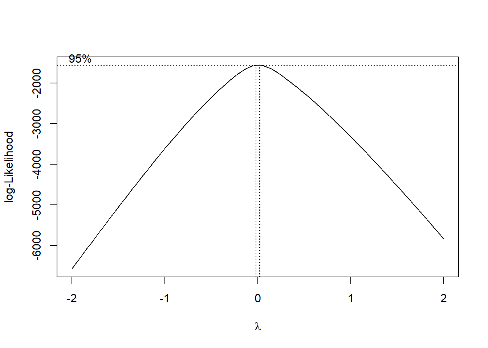
The plot shows that \(\lambda\) is very close to \(0\). Therefore it is recommended to use log(y) as the transformation. You can compare the results below.
fit1 <- lm(y ~ ., data = dat)
summary(fit1)
Call:
lm(formula = y ~ ., data = dat)
Residuals:
Min 1Q Median 3Q Max
-10297084 -4291923 -1735555 1765190 97635968
Coefficients:
Estimate Std. Error t value Pr(>|t|)
(Intercept) -25039852 2545727 -9.836 < 2e-16 ***
x1 9050580 1432360 6.319 5.87e-10 ***
x2 7570002 700508 10.806 < 2e-16 ***
---
Signif. codes: 0 '***' 0.001 '**' 0.01 '*' 0.05 '.' 0.1 ' ' 1
Residual standard error: 9094000 on 497 degrees of freedom
Multiple R-squared: 0.2461, Adjusted R-squared: 0.2431
F-statistic: 81.11 on 2 and 497 DF, p-value: < 2.2e-16plot(fit1, which = 1)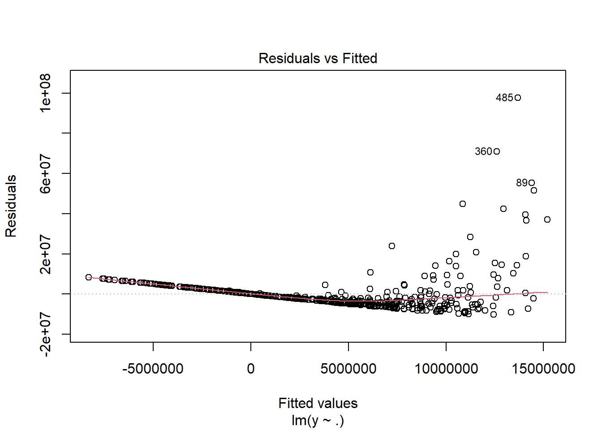
fit2 <- lm(I(sqrt(y)) ~ ., data = dat)
summary(fit2)
Call:
lm(formula = I(sqrt(y)) ~ ., data = dat)
Residuals:
Min 1Q Median 3Q Max
-1654.5 -637.8 -151.1 347.3 7333.4
Coefficients:
Estimate Std. Error t value Pr(>|t|)
(Intercept) -4668.82 292.01 -15.99 <2e-16 ***
x1 1550.94 164.30 9.44 <2e-16 ***
x2 1743.21 80.35 21.69 <2e-16 ***
---
Signif. codes: 0 '***' 0.001 '**' 0.01 '*' 0.05 '.' 0.1 ' ' 1
Residual standard error: 1043 on 497 degrees of freedom
Multiple R-squared: 0.537, Adjusted R-squared: 0.5351
F-statistic: 288.2 on 2 and 497 DF, p-value: < 2.2e-16plot(fit2, which = 1)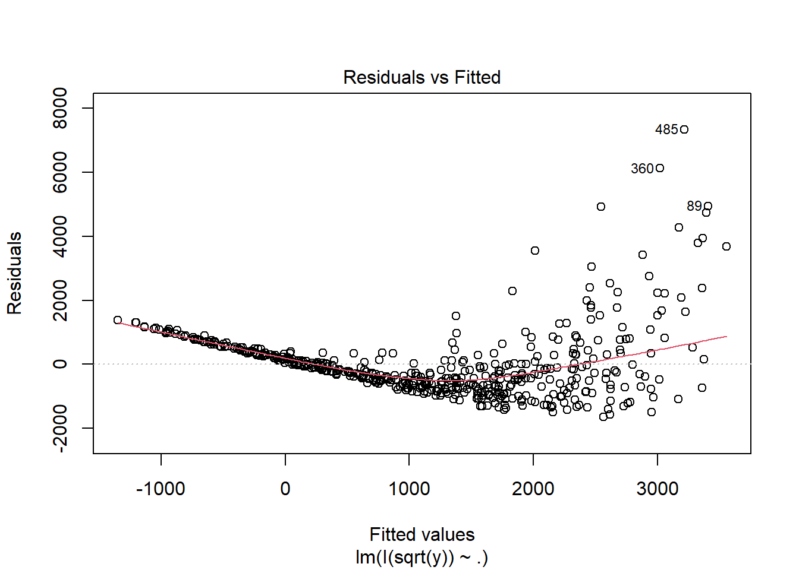
fit3 <- lm(I(log(y)) ~ ., data = dat)
summary(fit3)
Call:
lm(formula = I(log(y)) ~ ., data = dat)
Residuals:
Min 1Q Median 3Q Max
-2.85235 -0.68275 -0.01436 0.67809 2.70488
Coefficients:
Estimate Std. Error t value Pr(>|t|)
(Intercept) 0.26917 0.28330 0.95 0.343
x1 2.87093 0.15940 18.01 <2e-16 ***
x2 3.96072 0.07795 50.81 <2e-16 ***
---
Signif. codes: 0 '***' 0.001 '**' 0.01 '*' 0.05 '.' 0.1 ' ' 1
Residual standard error: 1.012 on 497 degrees of freedom
Multiple R-squared: 0.8571, Adjusted R-squared: 0.8565
F-statistic: 1491 on 2 and 497 DF, p-value: < 2.2e-16plot(fit3, which = 1)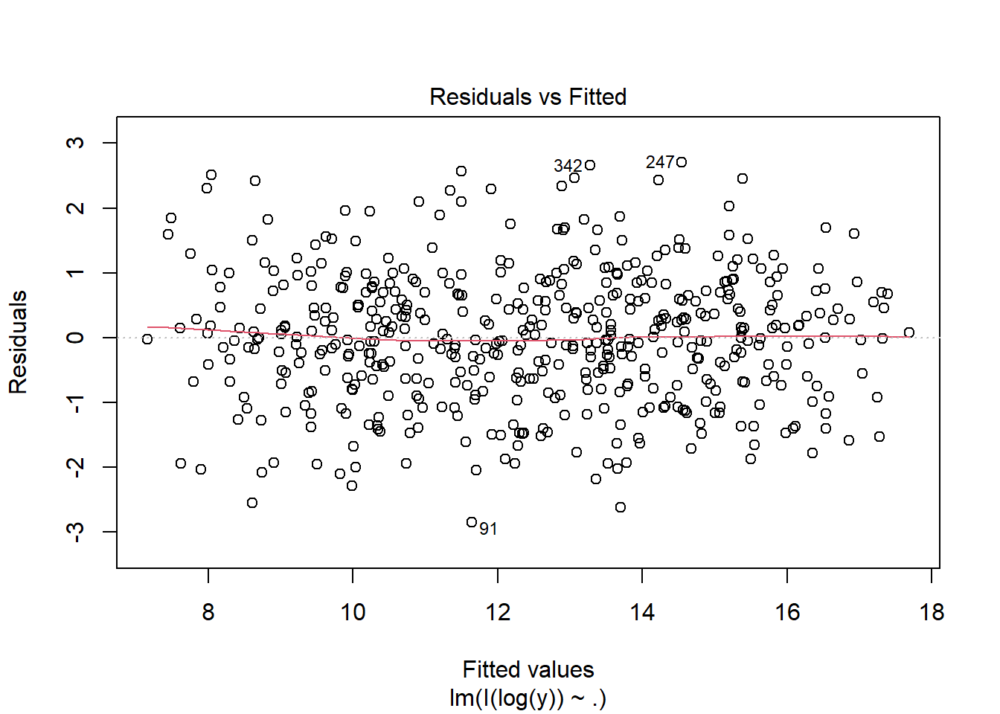
13.4 Checking the Normality Assumption
Normality is another standard assumption used for many regression inference procedures.
Common tools include:
- histogram of residuals,
- stem-and-leaf display,
- normal probability plot (QQ plot).
Among these, the QQ plot is often the most informative.
Interpreting a normal probability plot
- The x-axis represents the residuals, and the y-axis represents the normal scores.
- If the points follow an approximately straight line, the normality assumption is reasonable.
- Strong curvature or systematic deviation from a line suggests nonnormality.
Example 13.9 (Examples of QQ plots)
set.seed(1)
n <- 2000
x <- runif(n, 1, 2)
eps <- rnorm(n)
y <- 10 + 2 * x + eps
dat1 <- data.frame(x = x, y = y)
fit1 <- lm(y ~ x, data = dat1)
plot(fit1, which = 2)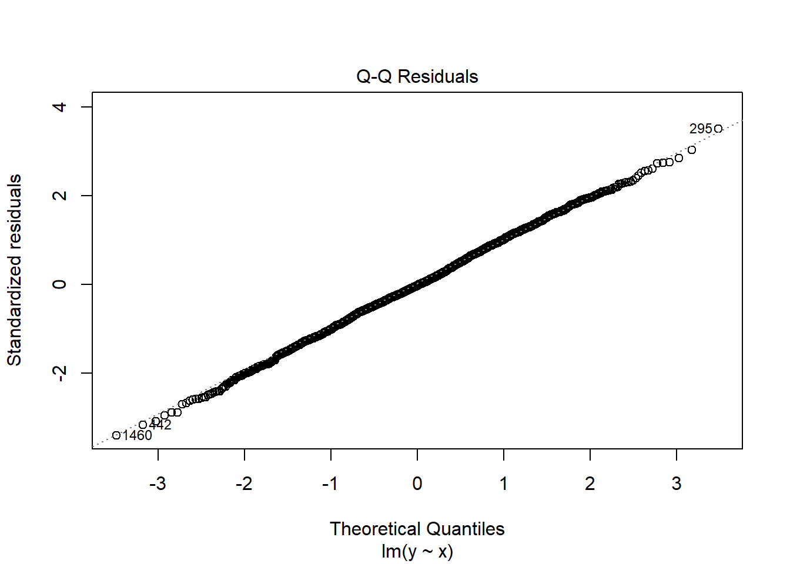
Nonnormality is often accompanied by heteroscedasticity. In many cases, a transformation of the response helps with both problems.
A standard family of transformations is the Box–Cox transformation, which can help identify a suitable power transformation for the response.
Example 13.10 (dat2)
set.seed(1)
n <- 2000
x <- runif(n, 1, 2)
mu <- exp(1 + x)
y <- rlnorm(n, log(mu), 0.5)
dat2 <- data.frame(x = x, y = y)
fit2 <- lm(y ~ x, data = dat2)
plot(fit2, which = 2)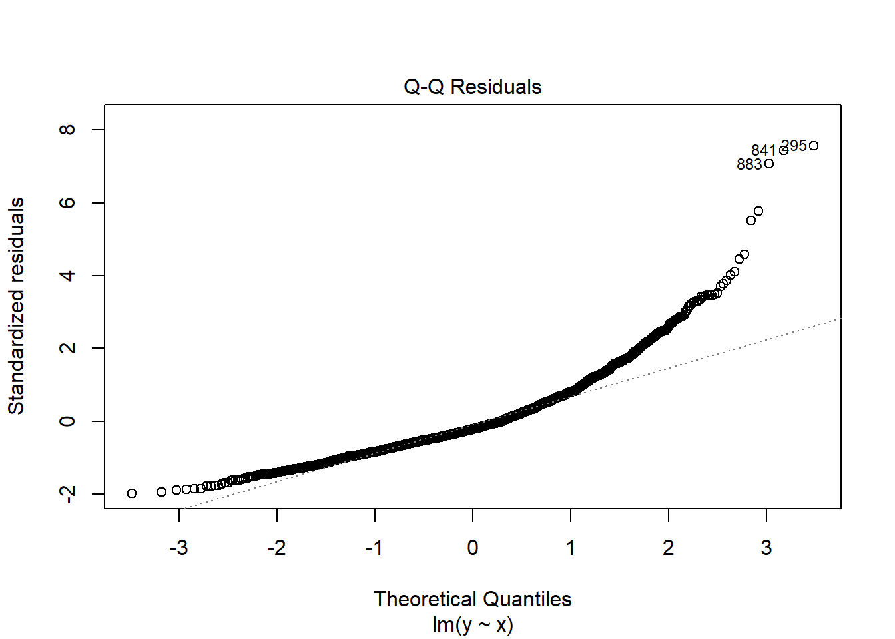
Since
boxcox(fit2)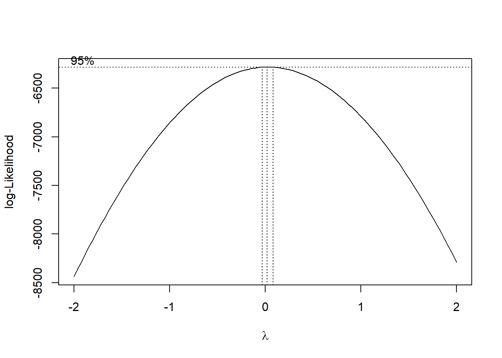
\(\lambda=0\). Therefore we need to transform \(y\mapsto \log(y)\).
fit2c <- lm(I(log(y)) ~ x, data = dat2)
plot(fit2c, which = 2)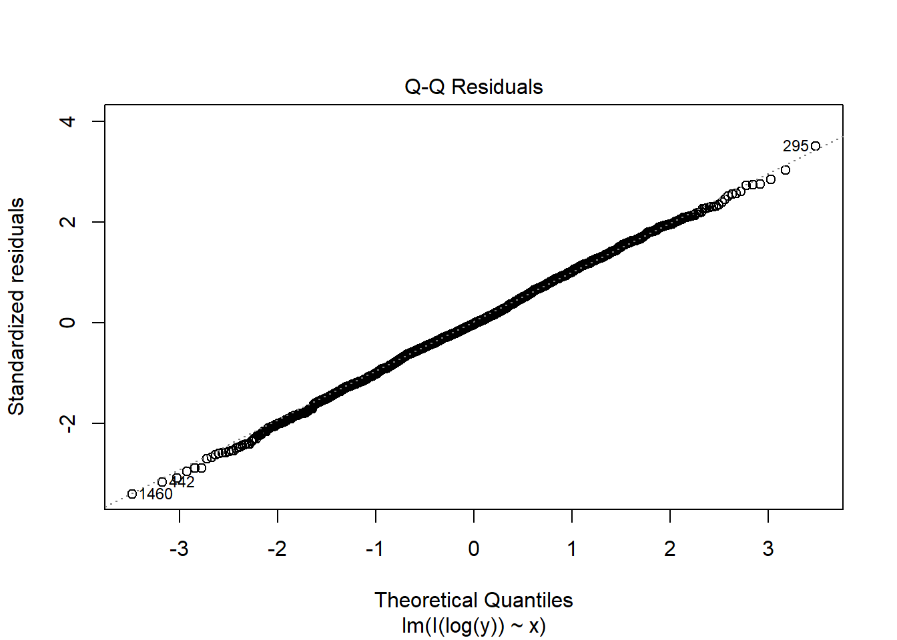
The non-normality is fixed by the Box-Cox transformation in this case.
Example 13.11 (dat3) Consider dat3.
set.seed(1)
n <- 2000
x <- runif(n, 1, 2)
eps <- rnorm(n, 0, 0.25 * x)^3
y <- 5 + 2 * x + eps
dat3 <- data.frame(x = x, y = y)
fit3 <- lm(y ~ x, data = dat3)
plot(fit3, which = 2)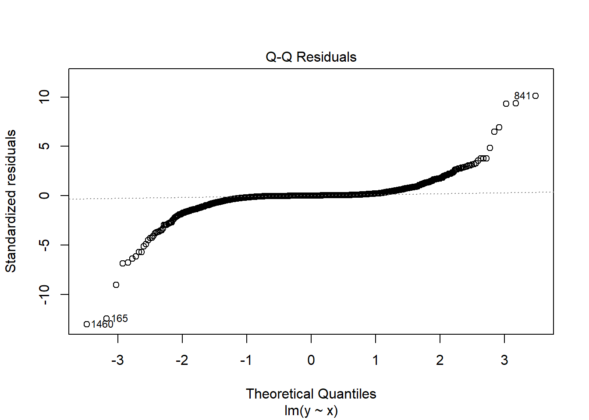
Since
boxcox(fit3)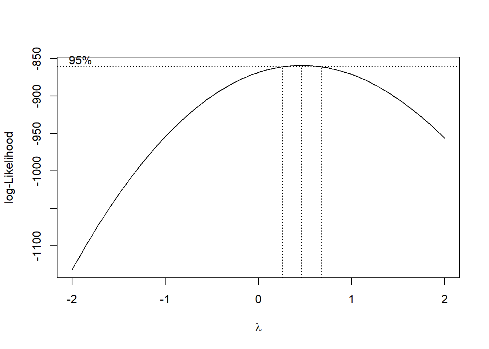
\(\lambda\approx 0.5\). Therefore we need to transform \(y\mapsto \sqrt{y}\).
fit3c <- lm(I(sqrt(y)) ~ x, data = dat3)
plot(fit3c, which = 2)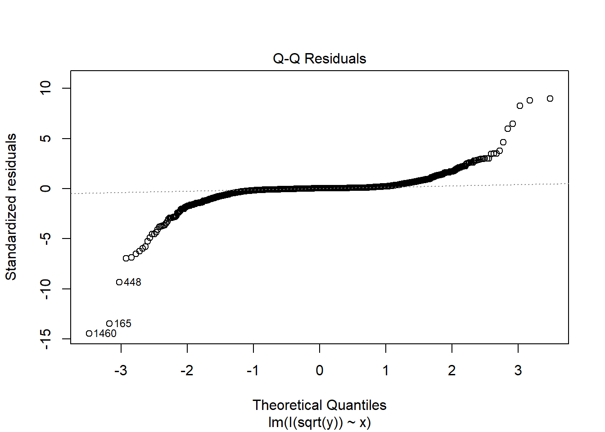
Note that the non-normality is almost not fixed in this case.
Caution
Among the assumptions of the linear regression model, the normality assumption usually has the least impact on the estimation itself. The main role of the normality assumption is to justify the use of t-tests and F-tests for assessing the significance of variables.
If the error terms are not normally distributed, these tests may not be exact when the sample size is small. In such cases, directly applying the usual t-test and F-test formulas may lead to less accurate inference.
Therefore, it is desirable for the error term to be approximately normally distributed. However, in practice this assumption is not crucial. As long as the other key assumptions—such as linearity, independence, and constant variance—are reasonably satisfied, the regression results are usually still reliable, especially when the sample size is large. In large samples, the central limit theorem implies that the sampling distribution of the estimated coefficients is approximately normal, even if the error terms are not normally distributed.
NoteBox-Cox transformation
The Box–Cox transformation is used to find a power transformation of the response variable that stabilizes variance and improves the linear model assumptions. So its main usage is to stabilize variance, and it could move the error term towards the normal distribution as a byproduct.
13.5 Detecting Outliers and Influential Observations
13.5.1 Outliers
Not every unusual point has the same meaning. Some are merely outliers in the response direction, while others strongly affect the fitted model.
Definition 13.2 (Standardized residuals) The standardized residual, denoted \(z_i\), for the ith observation is the residual for the observation divided by \(s\), that is, \[ z_i=\hat\varepsilon_i/s=(y_i-\hat y_i)/s. \]
A common rule of thumb is:
- \(|z_i| > 2\) may indicate a possible outlier,
- \(|z_i| > 3\) indicates a more serious outlier.
Standardized residuals can be computed using rstandard() from base R.
Example 13.12
dat <- data.frame(
x = c(1, 2, 3, 4, 5, 6, 7, 8, 9, 10),
y = c(3, 6, 7, 9, 11, 13, 14, 17, 19, 40)
)
fit <- lm(y ~ x, data = dat)rstandard(fit) 1 2 3 4 5 6
0.55258559 0.52072313 0.10663264 -0.08383413 -0.26760528 -0.45251708
7 8 9 10
-0.83834131 -0.85785361 -1.10041972 2.81939657 plot(dat$x, rstandard(fit))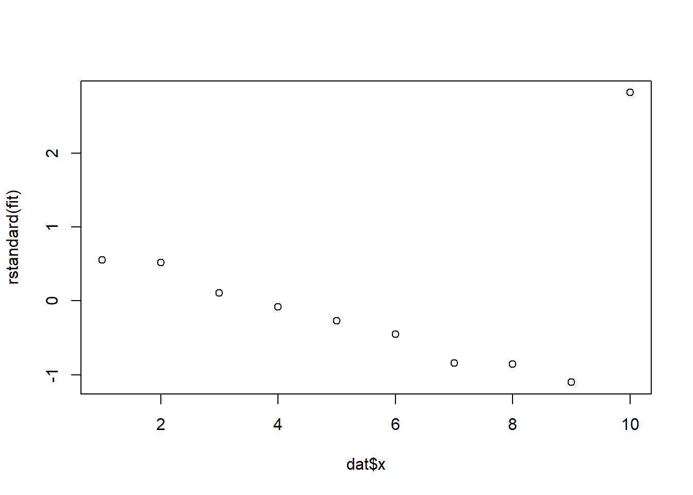
Definition 13.3 (Studentized deleted residuals)
- Deleted residual is the prediction error when the observation is left out of the model fitting: \[ d_i=y_i-\hat y_{(i)} \] where \(\hat y_{(i)}\) is the fitted \(y\)-value using data excluding the ith data point.
- The studentized deleted residual, denoted \(d^*_i\), is calculated by dividing the deleted residual \(d_i\) by its standard error \(s_{d_i}\): \[ d^*_i=\frac{d_i}{s_{d_i}}. \] It is usually preferred because it measures how unusual a point is when that same point is omitted from the variance estimate.
A common rule of thumb is:
- values outside \([-2,2]\) suggest possible outliers.
Studentized deleted residuals can be computed using rstudent() from base R.
Example 13.13
dat <- data.frame(
x = c(1, 2, 3, 4, 5, 6, 7, 8, 9, 10),
y = c(3, 6, 7, 9, 11, 13, 14, 17, 19, 40)
)
fit <- lm(y ~ x, data = dat)rstudent(fit) 1 2 3 4 5 6
0.52705285 0.49556260 0.09981666 -0.07845412 -0.25144978 -0.42881462
7 8 9 10
-0.82109279 -0.84211553 -1.11738294 33.02991250 plot(dat$x, rstudent(fit))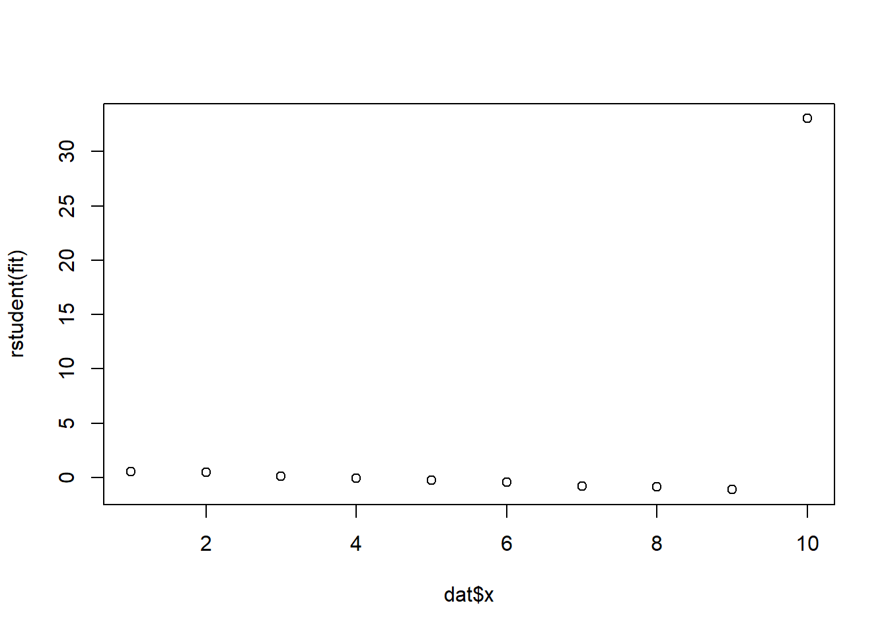
Caution
An outlier should not automatically be removed. We first ask:
- Is it a data-entry or recording error?
- Is the model missing important terms?
- Is the point valid but scientifically unusual?
Only obvious recording errors should be automatically corrected or removed.
13.5.2 Influential Observations
Definition 13.4 (Influential observation) An observation is influential if it has a substantial effect on the fitted model, parameter estimates, or conclusions.
Definition 13.5 (Leverage) The leverage of the ith observation is the weight \(h_i\) associated with \(y_i\) in the equation \[ \hat y_i=h_1y_1+h_2y_2+\ldots+h_iy_i+\ldots+h_ny_n \] where \(h1,\ldots,h_n\) are functions of only the values of the independent variables (\(x\)’s ) in the model. The leverage measures the influence of \(y_i\) on its predicted value \(\hat y_i\).
A common rule of thumb is:
- an observation is influential if \[ h_i>\frac{2(k+1)}{n} \] where \(k\) is the number of \(\beta\)’s in the model excluding \(\beta_0\).
Leverage can be computed using hatvalues() from base R.
Example 13.14
x <- c(1, 2, 3, 4, 5, 10)
y <- c(2, 3, 5, 7, 8, 2)
dat <- data.frame(x, y)
fit <- lm(y ~ x, data = dat)
plot(x, y)
abline(fit, col = "red", lwd = 2)
hatvalues(fit) 1 2 3 4 5 6
0.3639344 0.2590164 0.1934426 0.1672131 0.1803279 0.8360656 Definition 13.6 (Cook’s distance) Cook’s distance combines information about residual size and leverage to assess the influence of an observation on the fitted regression model.
Formally, Cook’s distance for observation \(i\) is
\[ D_i = \frac{\sum_{j=1}^{n}(\hat{y}_j-\hat{y}_{j(i)})^2}{p\,\text{MSE}} \]
where
- \(\hat{y}_j\) is the fitted value using all observations,
- \(\hat{y}_{j(i)}\) is the fitted value after removing observation \(i\),
- \(p\) is the number of regression parameters (including the intercept),
- \(\text{MSE}\) is the mean squared error from the fitted model.
Thus, Cook’s distance measures how much the fitted regression changes if observation \(i\) is removed.
A common rule of thumb is:
- \(D_i > 1\) suggests an influential observation,
- larger Cook’s distance values deserve further investigation.
Cook’s distance is often preferred because it captures the overall impact of an observation on the fitted model, taking into account both its residual and leverage. An observation tends to have a large Cook’s distance when it has both high leverage and a large residual.
It can be computed in R using cooks.distance().
x <- c(1, 2, 3, 4, 5, 10)
y <- c(2, 3, 5, 7, 8, 2)
dat <- data.frame(x, y)
fit <- lm(y ~ x, data = dat)
plot(x, y)
abline(fit, col = "red", lwd = 2)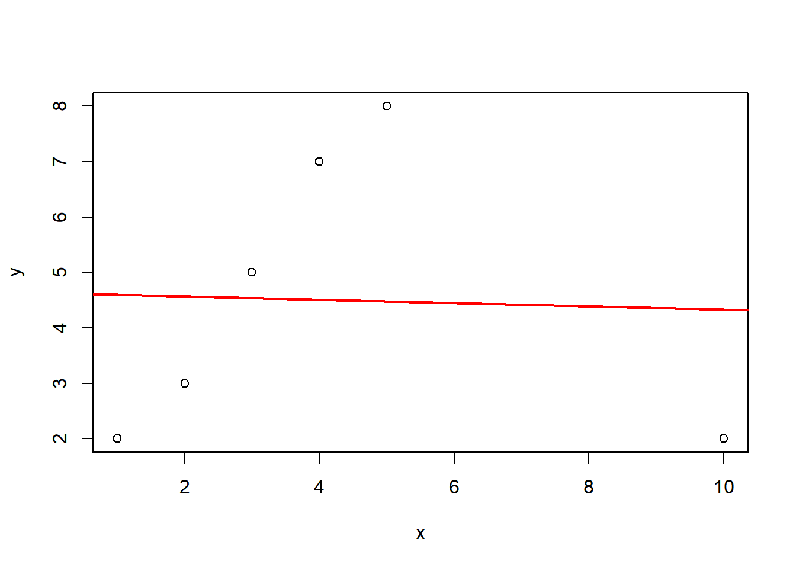
cooks.distance(fit) 1 2 3 4 5 6
0.361686277 0.068977352 0.003853169 0.089728747 0.199323795 10.078047824
NoteCritical point of Cook’s distance
While \(D_i > 1\) is a common heuristic, a more formal threshold involves comparing Cook’s distance to the \(F\)-distribution. Since \(D_i\) measures the movement of the parameter vector \(\hat{\beta}\) relative to its covariance matrix, we often look for values that push the estimates toward the edge of a confidence ellipsoid.
Usually, we compare \(D_i\) to the median of the \(F\)-distribution, denoted as \(F_{0.5}(p, n - p)\). If \(D_i\) exceeds this value, it indicates that deleting the \(i^{th}\) observation moves the least squares estimate to the edge of a \(50\%\) confidence region, signaling a major shift in the model’s structure. In R, this theoretical cutoff can be computed using qf(0.5, p, n - p).
For larger datasets where \(n\) is high, the \(F\)-median can be quite large and might fail to flag influential points. In these cases, a more sensitive and widely used threshold is \(D_i > 4/n\), which flags observations that exert a disproportionate influence relative to the rest of the sample.
13.6 Graphic tools plot(fit)
In R, all above tools are summarized in the R command plot(fit). This command produces several standard diagnostic plots that help assess the regression assumptions and detect unusual observations.
The most commonly used plots include:
- Residuals vs Fitted (
which=1)- Used to check linearity and constant variance.
- A random scatter around zero suggests the model is appropriate.
- Curvature suggests model misspecification (e.g., missing nonlinear terms).
- A funnel shape suggests heteroscedasticity.
- Normal Q–Q Plot (
which=2)- Used to assess whether the error terms are approximately normal.
- Points should lie roughly along the straight reference line.
- Scale–Location Plot (
which=3)- Also used to examine constant variance.
- Ideally the points should show a roughly horizontal band.
- Residuals vs Leverage (
which=5)- Used to identify influential observations.
- Points with high leverage and large residuals may strongly affect the fitted model.
- Cook’s distance contours are shown to highlight potentially influential observations.
These graphical tools provide a quick visual way to evaluate regression assumptions and identify observations that may require further investigation.
Note
In practice, diagnostic plots are often the first step in regression diagnostics before applying formal tests or numerical measures.
Example 13.15
x <- c(1, 2, 3, 4, 5, 6, 7, 8, 12)
y <- c(2, 4, 5, 4, 6, 7, 8, 9, 3)
dat <- data.frame(x, y)
fit <- lm(y ~ x, data = dat)summary(fit)
Call:
lm(formula = y ~ x, data = dat)
Residuals:
Min 1Q Median 3Q Max
-3.8551 -1.0290 0.1993 1.5145 3.0580
Coefficients:
Estimate Std. Error t value Pr(>|t|)
(Intercept) 4.1159 1.5343 2.683 0.0314 *
x 0.2283 0.2467 0.925 0.3857
---
Signif. codes: 0 '***' 0.001 '**' 0.01 '*' 0.05 '.' 0.1 ' ' 1
Residual standard error: 2.367 on 7 degrees of freedom
Multiple R-squared: 0.1089, Adjusted R-squared: -0.01835
F-statistic: 0.8558 on 1 and 7 DF, p-value: 0.3857par(mfrow = c(2, 2))
plot(fit)
par(mfrow = c(1, 1))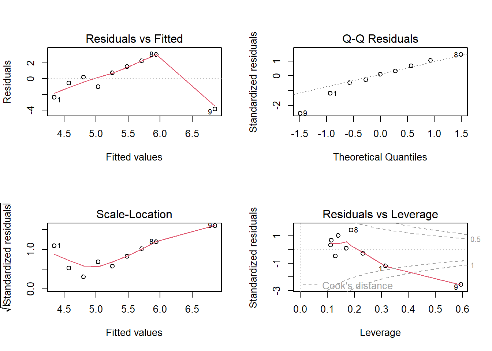
13.7 Model Building Procedure
Here is a flowchart for model building.
flowchart TD
A["How many independent variables?"]
A --> B["Numerous (e.g., 10 or more)"]
A --> C["Few in number"]
B --> D["Run variable selection <br>to determine most important x's"]
C --> E["Hypothesize model(s) for E(y)<br>consider interaction and higher-order terms"]
D --> E
E --> F["Determine best model for E(y)<br>1. Nested model F-tests<br>2. t-tests on important betas<br>3. Compare R2 values<br>4. Compare s values"]
F --> G["Check assumptions on random error<br>1. zero mean<br>2. constant variance<br>3. normal distribution<br>4. independence"]
G --> H["If necessary, make model modifications"]
H --> I["Assess adequacy of best model<br>1. Global F-test significant<br>2. R2 value high<br>3. s value small"]
I --> J{"Model adequate?"}
J -->|Yes| K["Use model for estimation / prediction<br>1. Confidence interval for E(y)<br>2. Prediction interval for y"]
J -->|No| L["Consider other independent variables<br>and/or models"]
L --> E